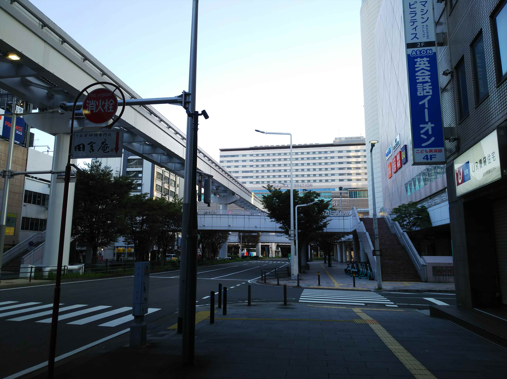
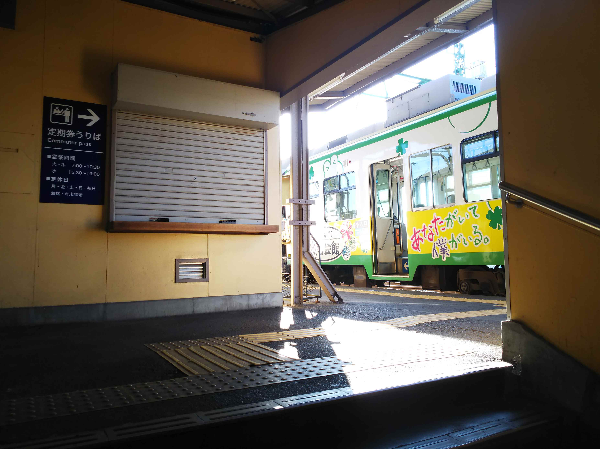
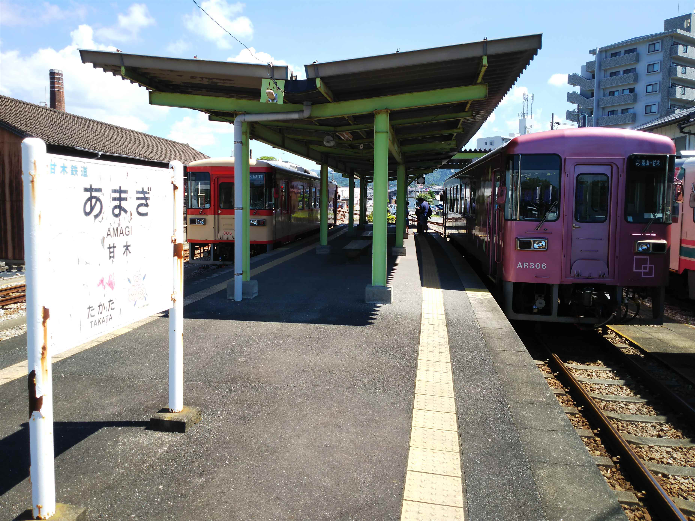
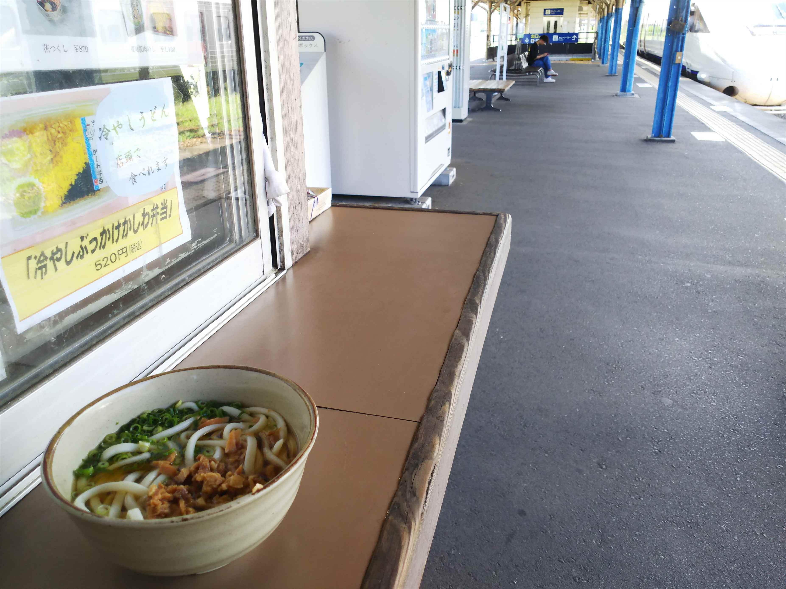
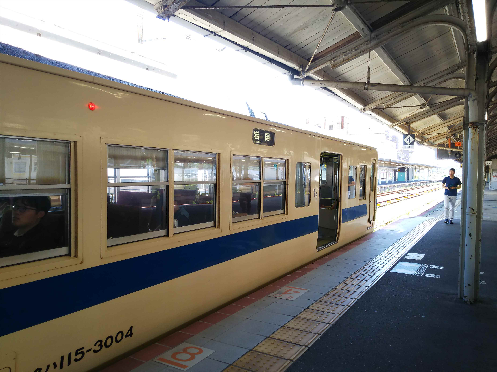

連続使用しか許されなくなった青春18切符。この夏も全然違う行き先の組み合わせ旅となりました。
今回は思いきって５日間を購入。運良く奈良のユーザーに仕事で行かなアカンようになって、初日分はかなり有効活用でけました。１日
あたり2000円になった！

大垣駅にやって来てます。とうとう米原からの車両
が新型のロングシート車に！（右側）最悪ですわ。
対して、バックの養老鉄道は懐かしの近鉄色ですね。

まずは久々に美濃赤坂支線に乗り込みます。
学生時代以来の美濃赤坂駅。こんな広々とした駅や
ったんや。何の記憶も残ってない。

駅舎も古いままですね。

駅前に西濃鉄道の本社が。
美濃赤坂から先も線路がつながっていて、貨物輸送
がされてます。
その部分が西濃鉄道という貨物鉄道です。

古めのＤＬが渋いっす。

次ににやって来たのは可児。

ひと駅乗って、息子と来たときに、妙に印象に残っ
てた明智駅に降り立ってみました。
元々、八百津線の分岐駅で、それっぽい雰囲気が残
ってます。
一時廃止の話も出てた広見線ですが、存続でまとま
ったようです。良かった良かった。
で、たぶん八百津線、乗ってると思います。この駅の記憶がなんとなくあります。


名鉄の岐阜エリアのローカル線は、もっと訪ねとけばと今さらながら悔やまれます。

太多線で美濃太田にやってきました。
元越美南線の長良川鉄道ですね。
フリー切符を買って乗り込みます。

まずは美濃白鳥駅で途中下車します。

今日は白鳥は白鳥踊りの徹夜踊りがあるのですが、
そうとは思えんほど活気も人気もないですね。

再び乗り込んで、終点の北濃駅に到着。
桜に囲まれたいい感じの駅ですね。

前回は学生時代の帰省で、越美北線からバスを乗り継いでここまでやって来た記憶があります。
桜の樹齢は若いし、前回訪問時にはこんなに木々はなかったと思います。
ちなみにこの長良川鉄道、ペイペイやカード決済で払えるみたいです。
そこまでせなアカンのですかね・・・

折り返しの列車に乗って、郡上八幡にやって来まし
た。

そう、８月の郡上八幡といえば何といっても郡上踊
り。
今日から徹夜踊りが始まります。
駅前は祭りがあるとは思えないぐらい静かです。

街の中は祭りっぽい雰囲気です。

ここが有名な川ガキが飛び込む橋ですね。
いや～、よーやるわ。


古い町並みも残ってますね。
山の上にお城もあります。
２０時に、いよいよ徹夜踊りのスタートです。
最初は地元の人ばっかりでしたが、そのうち観光客
も一緒に踊り出します。

踊りは外人たくさん参加してました。
私もちょっと踊ってみましたが、ふりがわからないので早々に退散です。
ほんまに徹夜で踊んの？
郡上八幡２１時発が最終なので、後ろ髪引かれる思
いで最終に乗って移動しました。
なぜか郡上八幡に約１０分遅れで到着した列車は、
遅れを回復することもなく、美濃太田の乗り換えが
間に合わすにあわず。謝罪もなし・・・。ふざけや
がって

さて、翌日。
米原から姫路まで初めて新快速を乗り通しました。
自宅横を定時に通過！

乗り継いで乗り継いで、広島に到着。
広電の新駅が開業してますね。

お盆のせいもあると思いますが、かなりの人混みで
す。
なくなった駅を見てると、ちょっと悲しい風景ですね。
さらに先に進みます。
岩国で降りてバスに乗り込みます。
しか～し！ここで大チョンボ！
降りるバス停間違えて、１５分近く時間のロス！
ほんまボケてる。歳やなぁ。

間違ったバス停から１０分近く歩いてたどり着いた
のが、目的の岩徳線の西岩国駅。
一時期は山陽本線の岩国駅として、観光客でにぎわ
った過去があります。

駅前には木炭バスが！
と思ったら、実物大の復元模型でした。


洒落た駅ですね。
ほんまは岩国に戻って山陽本線で西下する予定でし
たが、乗り継ぎ間に合わず岩徳線で西に移動するこ
とにします。
新幹線のらんでも何とか今日中に目的地に到達でき
そうやし、キハ４７のＢＯＸ席に座れるし、まぁよ
しとします。

徳山駅はなんかリフォームして新しくなってました。

徳山からは本日初の国鉄型電車。
岡山地区は国鉄型電車はほぼ絶滅してますからね。
しかし最後のほうはへとへとでした。

小倉で泊まりました。朝から鈍行旅、スタートです。
本日は久々に乗る私鉄も行程に組み入れてます。
まずは黒崎駅前。
何度か乗ってる筑豊鉄道です。「鉄道」といっても、
車両は路面電車です。

終着の筑豊直方。
なんで高架なんか、疑問でしたが、川がそばにあっ
て、土手からそのまま伸ばしたから高架なんやと気
づきました。
筑豊鉄道の駅はＪＲから離れているので、渋めのシャッター商店街
を通ってＪＲの駅に向かいます。
遠回りになりますが、博多経由で先に進みます。

博多に到着。ゆふいんの森は相変わらず人気なの
か、満席ですね。
博多から快速に乗って基山駅までやってきました。ここからは元国鉄の甘木鉄道で甘木まで寄り道です。

住宅も多く、西鉄乗換の駅もあって、順調に存続し
てる理由がわかる車窓でした。
甘木駅は、予想外に広い構内でした。
駅舎も渋いです。
で、この甘木の街にはもうひとつの鉄道駅がありま
す。
近くなので歩いて向かったのですが、もう少しで迷
って乗り遅れるところでした。
理由はこのとおり。西鉄やのに貧弱すぎる！ことで
んの終点のほうがもっと立派でっせ。
ゆっくり駅舎見物したかったけど、急いで乗り込み
ます。
ここから久留米まで直通してます。
久留米に到着。
ＪＲの駅に戻りたいんですが、遠いのでバスで移動します。
しか～し！バスの時間がちがう！バスの時刻表検索のサイトって、なんで
こんなええ加減なんや・・・
ＪＲの駅に行くバス待ってたら乗り継ぎヤバいので、駅に行かへんバスに
乗って途中で降りて歩いたがな。

無事、予定の電車に間に合い、鳥栖までやってきま
した。
昼はもちろん、かしわうどん。
別のホームには、かしわラーメンなる新商品もあり
ました。
閉店する駅そばが多い中、奮闘してるのはええこと
です。
九州のロングシート化が進みすぎてるので、てっき
りこれもロングと思って乗り込んだら、なんとクロ
スシート車！ラッキーです。

佐賀に到着。
キハ４７、いまだ健在なり！
しかし、ホームに止まってるのに、出発ちょっと前
になるまでドアは開かず、乗せてくれません。
このあともこんな仕打ちをする駅が多かったですが、
もっと乗客の身になれよ・・・
唐津行やったのですが、終点まで行くと乗り継ぎで
きないので、手前の山本駅で乗り換えます。
もう乗換の列車が来てます。
あわてて駅舎だけ確認してホームに戻りました。
やばいやばい。
伊万里に到着。
昔はここから松浦鉄道と線路繋がってたのに、分断
されてます。
ひどいことする・・・
ＪＲの駅のほうが肩身が狭いのか、小さ目ですね。
松浦鉄道の伊万里駅のほうは、国鉄の面影が少し残ってました。
唐津線以降、車内の日除け全おろしがデフォルトになってます。
車窓見たい派の私には非常に不快な状況です。
タイのバスがそんなんでしたが、もー日本の夏はそーゆー感じに
なってもーたってことっすよね。
有田に到着。
しかし昔はこんな駅に夜ふらっと来ても、そのまま
大阪まで帰れる列車が毎日走ってたって、なんと豊
かな時代やったんでしょう。
ちなみに小学生時代だと、１４系急行西海で、有田
20:17→9:14神戸ですね。
今回の最大の目的地、武雄温泉駅へ向かいます。
ハイブリッド車がここまで進出してますね。
武雄温泉駅到着。
さすが、新幹線の駅ともなると、コジャレた店がい
ろいろできてました。
いよいよ、未乗区間の初乗りです。
在来線特急も新幹線改札から乗る仕組みです。
次は江北・・・つまり在来線特急の次の停車駅か。
ん？新幹線予定駅？まさか肥前山口程度では、ない
っすよね。
せっかく早めにホーム上がったのに、清掃中でなか
なか乗せてくれません。暑いし少々イラつきます。
在来線には観光列車の４０４７が到着です。
これも接続するんかな？
ドアが開いて、いよいよ乗り込みます。
ひと車両に１０人ものってない状態でいよいよ出発
諫早のみ停車の最速停車の列車です。ほんまはこだ
まタイプが良かったけど、この次になると日も暮れ
そうで・・・
半分以上、トンネルです。大村湾は綺麗に見えまし
た。（一番きれいなところは撮り逃しました）

国鉄ＪＲ国鉄系第三セクター現存区間は明るいうち
完乗、奪還です！
もー、全通するまで乗ることないやろし、というこ
とは西九州新幹線は最初で最後かな。
羽田空港連絡線ができるまで、記録キープでけるかな。
在来線は架線がなくなってました。衝撃です。もー
来るのはハイブリッド車だけのようですね。
完乗奪還祝いに、たまにはご当地グルメを。
皿うどんです。高いです。でもおいしかったっす。
長崎の人はソースをかけるというのでやってみたりしました。
すっかり変わってしまった長崎駅。
もちろん昔の駅のほうが断然好きです。
降りたったら大量の爆竹の音。そう、今日は精霊流しの日です。
どこで見れるんやろと調べてたのがアホらしいぐら
い、どんどん精霊船が練り歩いてます。
しかし、さだまさしはウソつきとわかりました。ヘ
ビメタでアレンジせなアカンような賑やかさです。
個人や町内でだしてるもの、担いでる神輿パターンもありますわ。
坂の多い街やのに、ブレーキどうしてるんか気になります。 小型のものは手押しの台車がベースですね。
それにしても火傷せぇへんのか気になるぐらいの花火の量です。
これが見た中で最大の精霊船でした。多分、金持ちな
んやろな～
最後、どうするんやろと思ってゴールっぽいところに
行って見ましたが、奥のほうで即分解でした。
台車は来年使うんやろか？
翌朝。
道路には爆竹の跡が残ってるものの、昨日の大爆竹大会後としては少ない。
多分夜中か早朝に掃除しはったんでしょうね。ご苦労様です。
しかし、今回は、ホテル代の上昇を実感しました。いままで並み値段で予約
したホテルのボロいこと・・・
ローカル線と化した長崎本線の途中駅での交換風景。
肥前浜で乗り換え。
昔、快速で本線走ってた車両やん。
おかげで長崎から小倉まで、というか小倉下関間以外
はクロスシートで移動でけました。
ハイブリッド車の、１両に1～2箇所しかないボックス
シートに座れたのが大きかったっす。それと鳥栖から
の快速がボロ車両やったのも助かりました。
鳥栖から小倉までロングシートて、やってられへんか
らなぁ。

下関からは、初めての一人旅で広島に行った時の目的のひとつ、１１５系２ドア車が登場時の復刻塗装でお
出迎えでした。 やっぱ持ってますわ。
最後、岡山行が１０分ぐらい遅れてて、姫路行の接続間に合うかドキドキしてるときに倉敷で遅れてる伯備
線の普通が先行するとか突然言い出してキレそうになりましたが、乗り換えた列車で無事姫路行に乗れたの
で安心しました。
落ち着いて旅行させろっちゅうねん・・・
ちなみに長崎7:07発で神戸着23:31。鈍行のみで１６時間２４分。急行西海が１３時間やったので、健闘してますね。
山陽新幹線開業前のディーゼル特急かもめなら、１０時間４０分。さすがのスピードです。